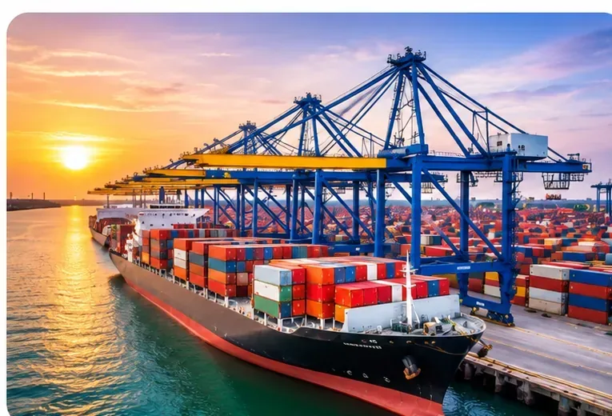
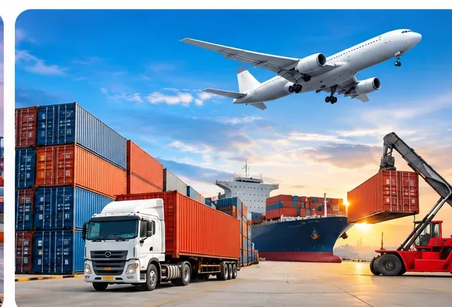

Supplier Coordination
We seek to understand the buyer's specification, target quantity, destination and commercial expectations, then coordinate relevant supplier information and product details.
Practical coordination between suppliers, buyers and international markets.
International trade requires clear communication and well-defined expectations. K.K. International works with manufacturers, overseas buyers, buying houses and trading agents to explore sourcing and supply opportunities across its product interests.


We seek to understand the buyer's specification, target quantity, destination and commercial expectations, then coordinate relevant supplier information and product details.
Our international business connections extend across Pakistan, Malaysia, China and other regional markets. Each opportunity is assessed individually; any proposed transaction remains subject to supplier confirmation, documentation and mutually agreed terms.